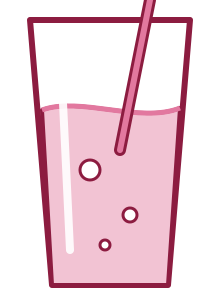

Gabriela Barroso · Nutri@gabrielabarroso.nutri
Beba água
Beba água
Beba água!

seu corpo agradece
Uma referência simples: cerca de 35 ml por kg de peso por dia. Em dias quentes ou com treino, um pouco mais.
Dica: deixe uma garrafa à vista 💧
HidrataçãoArrasta